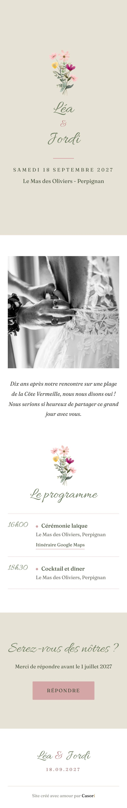
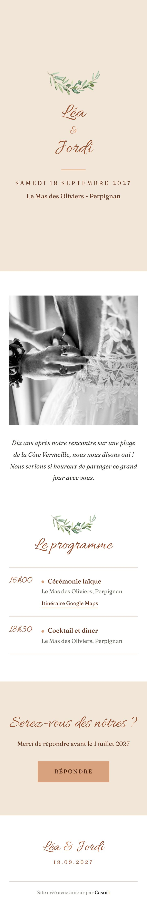
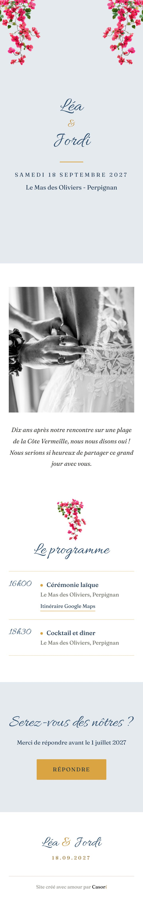
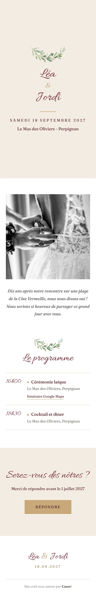
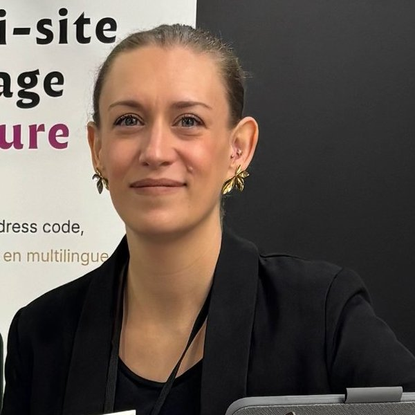

L'Atelier Casorí
Votre site de mariage en 10 minutes.
Vous le créez vous-mêmes et le voyez prendre forme en direct. Nous le vérifions et le mettons en ligne sous 7 jours.
49€ une seule fois, tout compris
Créer notre site
Comment ça marche
Vous créez
Prénoms, photo, programme, couleurs : en 6 étapes, avec l'aperçu de votre site en direct.
Vous validez
Vous relisez, puis vous payez en ligne en toute sécurité.
C'est en ligne
Sous 7 jours, vous recevez le lien de votre site, prêt à partager.
Vos couleurs, votre motif
4 palettes au choix, ou vos propres couleurs. Tout le site s'accorde automatiquement.
Sauge & rose ancien

Terracotta & sable

Méditerranée & ocre

Bordeaux & champagne
 Bouquet
Bouquet Olivier
Olivier Bougainvillier
Bougainvillier+10€
Ce qui est inclus
- Vos prénoms calligraphiés
- Votre photo et votre petit mot
- Le programme de la journée, jusqu'à 5 moments, avec les itinéraires
- Les réponses de vos invités via votre formulaire Google (modèle fourni)
- 4 palettes ou vos propres couleurs, 3 motifs
- Une adresse à vos prénoms : mariages.casori.fr/vos-prenoms
- En ligne jusqu'à 1 an après votre mariage
- Invisible sur Google : seuls vos invités le trouvent
Ce qui ne l'est pas
- Les modifications après validation, sauf correction d'une coquille
- Les rubriques supplémentaires (hébergements, menu, liste de cadeaux…)
- Plusieurs langues
- Le faire-part papier assorti
- Un accompagnement personnalisé
Envie de plus ? Nos formules accompagnées vont plus loin : rubriques au choix, plusieurs langues, faire-part papier. Vos 49€ sont déduits.
Voir les formules
Derrière l'Atelier
Je m'appelle Ingrid. Je dessine chaque modèle de l'Atelier à Perpignan, et je vérifie personnellement chaque site avant sa mise en ligne.
Une question ? Écrivez-moi : je vous réponds avec plaisir.
Me contacterQuestions fréquentes
Puis-je modifier mon site après le paiement ?
Non : vous voyez votre site exactement tel qu'il sera publié avant de valider. Seule la correction d'une coquille reste possible. Pour un site qui évolue avec vous, découvrez nos formules accompagnées.
Combien de temps mon site reste-t-il en ligne ?
Jusqu'à 1 an après la date de votre mariage, pour que vos invités puissent le retrouver après la fête.
Comment mes invités répondent-ils ?
Par un formulaire Google, que vous créez en un clic à partir de notre modèle. Vous retrouvez toutes les réponses dans un tableau.
Mon site est-il visible par tout le monde ?
Il n'apparaît pas sur Google : seules les personnes à qui vous donnez le lien peuvent le voir.
Comment se passe le paiement ?
En ligne, par carte bancaire, sur une page de paiement sécurisée Stripe. Vous recevez votre reçu et votre facture par e-mail.
Et si nous changeons d'avis pour une formule accompagnée ?
Vos 49€ sont déduits de la formule choisie. Parlons-en.